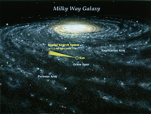

Fekete lyuk
A fekete lyuk a téridő olyan tartománya, ahonnan az erős gravitáció miatt semmi, még a fény sem tud távozni.

Tejútrendszer
A Tejútrendszer a Lokális Galaxiscsoport egyik küllős spirálgalaxisa, melyben a Naprendszer és ezen belül Földünk található

Neutroncsillag
A neutroncsillagok nagy mennyiségű szabad neutront tartalmazó maradványcsillagok.

Kvazár
A kvazár közepén óriási energiaforrás van, nagy valószínűséggel egy fekete lyuk.
Galaxisok
A galaxisokról
A galaxisok égitestek: csillagok, csillagközi gázok, por és a láthatatlan sötét anyag nagy kiterjedésű, gravitációsan kötött rendszerei. Egy tipikus galaxisban tízmillió és ezermilliárd (107 – 1012) közötti számú csillag található, és mind azonos középpont körül kering. A magányos csillagokon kívül egy galaxisban rengeteg több csillagot tartalmazó rendszer, nyílthalmaz, gömbhalmaz és köd található. A legtöbb galaxis átmérője több ezertől több százezer fényévig terjed, és a galaxisok között több millió fényév távolság a jellemző. A közöttük lévő űr nagyon jó vákuumnak tekinthető, kevesebb mint köbméterenkénti egy atommal. Feltehetően több mint százmilliárd (1011) galaxis van a Világegyetem belátható részében.
Tejútrendszer
A Tejútrendszer a Lokális Galaxiscsoport egyik (a Hubble-féle galaxisosztályozás szerinti SBb vagy SBc típusú) küllős spirálgalaxisa, melyben a Naprendszer és ezen belül Földünk található. Mai becslések alapján 100-400 milliárd csillag található benne, átmérője 30 kiloparszek (97 800 fényév, azaz 9,5·1017 kilométer), legnagyobb vastagsága 5 kpc (16 300 fényév). A Földről két spirálkarját, az Orion- és Nyilas-kart látjuk. Vizsgálatát megnehezíti, hogy belülről látjuk.
Lokális Galaxiscsoport
A Lokális galaxiscsoport (rövidítve LGCs), Lokális csoport vagy Lokális rendszer (régebbi nevén Lokális galaxishalmaz vagy Lokális halmaz) az a galaxishalmaz, amelybe a Tejútrendszer és az Androméda-galaxis is tartozik. A csoport körülbelül harminc tagot számlál, gravitációs középpontja e két említett galaxis között helyezkedik el. Átmérője 10 millió fényév körüli, és kettős (súlyzó) alakja van. A csoport teljes tömege feltehetően (1,29 ± 0,14)·1012M☉. A csoport maga egyike a Virgo-szuperhalmaz csoportjainak.
Androméda-galaxis

Az Androméda-galaxis vagy Androméda-köd (M31, NGC 224) egy spirálgalaxis az Andromeda csillagképben. Sb típusú spirálgalaxis. Távolsága a Naptól 2,5 millió fényév. A hozzánk legközelebbi extragalaxisok egyike, a Lokális Csoport legnagyobb tömegű galaxisa, csak a Tejútrendszer körül keringő törpegalaxisok vannak közelebb nála. Átmérője 220 ezer fényév. Tizennégy törpegalaxis kering körülötte. Tömege 800-1500 milliárd naptömeg. 400 000 km/h sebességgel közeledik a Tejútrendszerhez.
UGC 2885
Az UGC 2885 egy SA(rs)c típusú , nagy, korlátos spirálgalaxis a Perszeusz csillagképben . 232 millió fényévre (71 Mpc ) van a Földtől, átmérője pedig 463 000 ly (142 000 pc ), így az egyik legnagyobb ismert spirálgalaxis . A Halak-Perseus szuperhalmaz egyik lehetséges tagja is . Az UGC 2885 egy spirálgalaxis , amelynek felületi fényereje viszonylag alacsony.